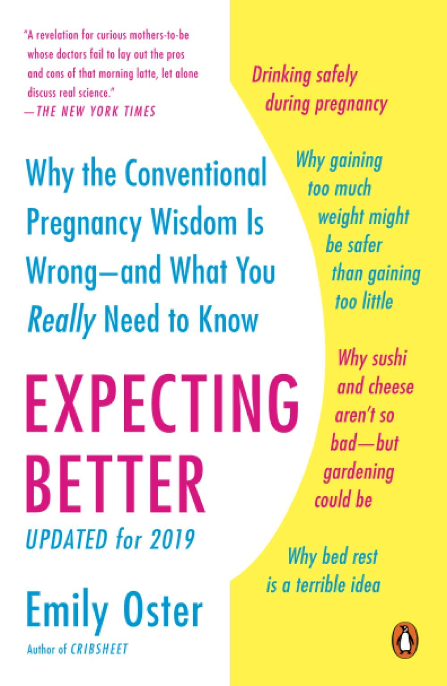

Books
Expecting Better by Emily Oster
The insomnia reading material that's keeping me sane right now.
Pregnancy — unquestionably one of the most profound, meaningful experiences of adulthood — can reduce otherwise intelligent women to, well, babies. Pregnant women are told to avoid cold cuts, sushi, alcohol, and coffee without ever being told why these are forbidden. Rules for prenatal testing are similarly unexplained. Moms-to-be desperately want a resource that empowers them to make their own right choices.
When award-winning economist Emily Oster was a mom-to-be herself, she evaluated the data behind the accepted rules of pregnancy, and discovered that most are often misguided and some are just flat-out wrong. Debunking myths and explaining everything from the real effects of caffeine to the surprising dangers of gardening, Expecting Better is the book for every pregnant woman who wants to enjoy a healthy and relaxed pregnancy — and the occasional glass of wine.